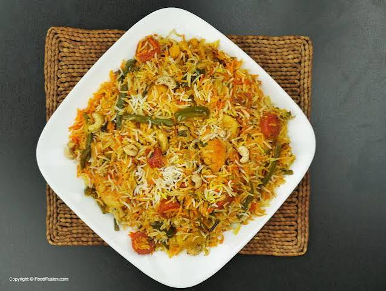

Chicken Biryani

Ingredients
- 2 cups basmati rice
- 500 grams chicken
- 2 onions, sliced
- 2 tomatoes, chopped
- 1 cup yogurt
- 2 tablespoons cooking oil
- 2 tablespoons biryani masala
- Fresh coriander and mint
- Salt to taste
- Water as needed
Steps
- Wash the basmati rice and soak it for 20 minutes.
- Heat oil in a pot and fry the sliced onions until golden.
- Add the chicken, tomatoes, yogurt, salt, and biryani masala.
- Cook the chicken until it becomes tender and the gravy thickens.
- Boil the soaked rice in water until it is partly cooked, then drain it.
- Layer the rice over the chicken mixture and add mint and coriander.
- Cover the pot and cook on low heat for 15–20 minutes.
- Mix gently and serve your hot chicken biryani.
Food Words
- Marinate
- To soak food in spices or a sauce before cooking.
- Simmer
- To cook food gently over low heat.
- Garnish
- To decorate food with herbs or other ingredients.
Nutrition Information
| Nutrient | Approximate Amount per Serving |
|---|---|
| Calories | 450 kcal |
| Protein | 25 g |
| Fat | 15 g |
Nutrition values are estimates and depend on the ingredients used.
Watch the Recipe
Learn more about making biryani in this Chicken Biryani recipe video .